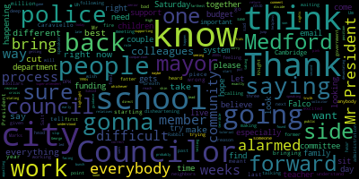
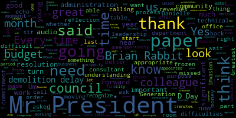

AI-generated transcript of City Council 06-16-20
English | español | português | 中国人 | kreyol ayisyen | tiếng việt | ខ្មែរ | русский | عربي | 한국인
Back to all transcripts
Heatmap of speakers
[Adam Hurtubise]: Okay, Mr. President, I'm ready when you are. Thank you, Clerk Hurtubise.
[Falco]: The 21st regular meeting of the Bedford City Council will now come to order. Clerk Hurtubise, please call the roll.
[Adam Hurtubise]: Councilor Bears. Present. Vice President Caraviello. Present. Councilor Knight. Present. Councilor Marks. Present. Councilor Morell. Present. Councilor Scarpelli.
[Falco]: Present.
[Adam Hurtubise]: President Falco.
[Falco]: Present. All seven members are present. This time I ask everyone to please rise to salute the flag. I pledge allegiance to the flag of the United States of America, and to the republic for which it stands, one nation under God, indivisible, with liberty and justice for all. Thank you. Pursuant to Governor Baker's March 12, 2020 order, suspending certain provisions of the open meeting law, general law, chapter 30A, section 18, and the governor's March 15, 2020 order, imposing strict limitation on the number of people that may gather in one place, this meeting of the Medford City Council will be conducted via remote participation to the greatest extent possible. Specific information in the general guidelines for remote participation by members of the public and your parties with the right The indoor requirement to attend this meeting can be found on the City of Medford website at www.medfordma.org. For this meeting, members of the public who wish to listen or watch the meeting may do so by accessing the meeting link contained herein. No in-person attendance of members of the public will be permitted, but every effort will be made to ensure that the public can adequately access the proceedings in real time via technological means. In the event that we are unable to do so despite best efforts, we will post on the City of Medford or Medford Community Media website an audio or video recording, transcript, or other comprehensive record of proceedings as soon as possible after the meeting. 20-420, offered by Vice President Caraviello. Whereas the City of Medford is in a fiscal budget emergency, Be it resolved that the mayor be requested to appropriate with the city council approval the necessary amount of free cash to address the municipal in-school budget deficits. Be it further that the mayor be requested to replenish this account with any budget aid that it receives from the federal government or the Commonwealth of Massachusetts. Be it further resolved that the mayor respond to this request by next Tuesday's city council meeting.
[Caraviello]: Thank you, Mr. President. Mr. President, I know this is a request that should be coming from the mayor, but I thought that it was appropriate that I put it out there this week in order to maybe speed the process up for the mayor. I was informed today that 130 teachers were let go. They were non-professionals, and these are difficult times. We do have a decent amount in free cash. I'm not recommending that you use the whole amount, but use an amount that she's deemed necessary in order to maybe save the jobs of some teachers and guidance Councilors, because I think we've all started getting the emails from people about the layoffs of the children. So Mr. President, and I also like to make one more statement for the viewing public. The city council does not do the school committee budget. Uh, the the budget is done by them only we've i've been getting emails from people saying that the city council has cut the jobs of teachers We do not do that. The budget comes from the school committee, uh that we haven't even seen yet So please understand the process to the people that are sending out emails school committee does their budget and submits it to us At which point we do not have the ability to add any funds to it. We can make suggestions ability to cut funds out of the budget. So I wanted people to understand that because the emails are starting to pour in, thinking that it's the city council that cut all these people's jobs and it wasn't. So, but again, I opened this up for discussion with my fellow councillors and maybe this will speed the process up for the mayor a little bit. Thank you, Mr. President.
[Falco]: Thank you, Vice President Caraviello. We have Councilor Scarpelli, Councilor Morell, Councilor Bears, Councilor Scarpelli.
[Scarpelli]: Thank you, Mr. President, and thank you, Councilor Caraviello for bringing this forward. I know that to jump to my second piece, I did receive a bunch of emails that a school committee member sent out stating this year we are facing a $3.5 million budget that the cuts are right now, the school committee and superintendent cannot direct city funding, only the mayor and the city council. So what's happening is people taking that comment, whichever way that school member meant to put that out there, the way that it's going out to the public is again, it's starting that divide. It's what's wrong with the city council? Why are you not funding these people? Why, what are you doing? We need this. So again, it's been a very difficult last couple of weeks, but I tell you what, this is where we do not have to go as a community. This is so disheartening. I'm sorry, Councilor Falco, the One Medford, it's so farthest from the truth right now. It's so disheartening. That's what I've heard for the last three nights especially. I'm telling you that please, maybe the city solicitor, can reach out to the mayor with a highlight of what the role of the city council is during the budget in comparison to the school department. Because I know when we were on the school committee, we were given a tutorial and we understood exactly what the process was. Brings me to my first point. In the late 1990s, early 2000s, I was given my pink slip as a teacher in the city of Medford. It's probably the most devastating feeling you'll ever, ever feel. It's a helpless feeling. And I, too, are getting all the emails. I have former colleagues calling me and relatives calling me and saying, George, what are we doing? We'll know more as soon as we start our process on Saturday, I believe. if you correct me from wrong, I believe we're starting our process on Saturday on the city side.
[Bears]: Correct.
[Scarpelli]: But I want people to understand, we as a council will do everything we can to make sure that we're supporting our colleagues in city government. I think that as myself, I'm speaking for myself, but I have skin in the game like most of our councils here. We have children that are in the school system. My son's a senior. When I found out today, one of the cuts is we do not have a head of guidance at Medford High School. To me, that's appalling. I think that's terrible, especially what we're seeing, what's going to happen as kids return back to school. with the COVID crisis and not having someone in that position to lead what needs to be led is to me a very, very slippery slope. But again, again, I have to sit back as a Councilor and look at this objectively and say, this is very difficult. We're asking the school system to cut three and a half million dollars from a budget. So everybody's, I've also gotten contact that, you know, I got one email saying that we drastically underfund the school system for years while the city gets fatter and fatter. I don't know if it was meant literally, but I'm going to tell you something. We haven't been, we are on, we are on a thin line when it comes to fire, police, DPW. But we also will be looking at the same difficulties in the next few weeks. So I caution everybody to be alarmed, because I'm alarmed as a parent. As my former colleagues and friends, they're alarmed as teachers. The word gets out to the children, they're alarmed. My children are alarmed from what they've heard some of the teachers that were cut. So what I'm saying is, Let's stay focused. Let's try to get through the next couple of weeks the best we can, not pitting each other against each other, and try to find a way that we can all work together and try to do the best we can in these trying, trying times. We're no different than Brookline or Winchester or Somerville. Everybody's cutting, everybody. And I know we're all waiting for the governor to come down and say, if the federal government's not gonna do it, I'm gonna pull a billion dollars out of the rainy day account, and I'm gonna fund education. I'm gonna send funding right down to the cities and towns to bring them back. We can only hope, we can wish, but that's a possibility. But again, I'm gonna say it again, please, we've often had school commembers on this meeting in these falls. I hope somebody's here so they can bring it back to their colleagues. Please do not scream the sky is falling and point fingers. Let's take a deep breath as a community find a way to bring it all together, working together to do what's best for our whole community. Thank you, Mr. President.
[Morell]: Thank you, Councilor Scarpelli. Councilor Morell. Thank you, Mr. President. So I thank Vice President Caraviello for bringing this forward, but I just have one concern with this. So it was my understanding that at our most recent budget update, our independent auditor suggested that we use the free cash a certain amount, I think, $6 million or somewhere around there was referenced. Obviously that's up to the mayor, but because we could get enough local receipts back to bring us back to the level we're at now and maintain our bond rating. So considering cuts are already being made that have been referenced and the fact that school will be much more expensive to run, it doesn't seem to me to be in the best interest of our city and our schools to then take any money we might get from a bailout and put that back into free cash. I feel like because the independent auditor said we're able to get back up to a good level with the receipts coming in, that money that, you know, again, we don't know if this money is ever coming, but if it does come, that be put back in to make up for those cuts that are already happening and bring people on and secure people's jobs and make sure our school is prepared and our city services are prepared for this coming fall. So unless it's amended, I can't vote for this at this point, just because I don't think that taking that money and not applying it where it's most needed is the most prudent decision. So thank you.
[Falco]: Thank you, Councilor Morell. Councilor Bears.
[Bears]: Thank you, Mr. President. I thank everyone who's spoken so far. I agree with Councilor Morell's concern around that this money might be better used. I think one of the big concerns right now is the average estimate for a school district to go back to school with all the COVID stuff is over a million and a half dollars. I think that stands for Medford as well. So, we're in a bad place. We're cutting significant amounts from the budget. I mean, as Councilor Morell said, and I think as Councilor Caraviellola's motion is intended, the plan is already to cover the deficit with free cash. even with that in place, we're seeing big cuts and layoffs and positions that won't get filled and, you know, seniors who won't have guidance Councilors, you know, head of guidance, I should say. So that's, you know, the free cash won't get us out of this. It's not enough to stop cuts on the school side or the city side, which are already in a desperate place. So yeah, it's certainly, you know, We can't be making cuts like this right now. I know that we're in a difficult budget situation, but these are essential services and, you know, students are gonna need more, the city's gonna need more, and we're gonna be asking people to do more with less. And we know how that turns out and how that's turned out historically. So, you know, there's not enough free cash to fix this problem is my understanding. I hope that changes.
[Falco]: Thank you, Councilor Bears. Vice President Carvill.
[Caraviello]: You know, Mr. President, you know, Councilor Bears and Councilor Murdoch make good points. There's not enough money here to fix this problem. But again, we've already done our major borrowing for the City of Bedford. So, I mean, the library's been funded, the police station's been funded, so there's no big borrowing projects currently on the horizon right now. So, and let's say, money is at its lowest point ever. If this be the case, the mayor is only going to have to come to us and ask us for this money anyways. I'm trying to give her the leverage so she doesn't have to come to us at budget time. I know she's talked about spending $6.5 million, but again, you're going to have to vote on this coming down the line. And if you say you're not going to vote for her because you don't have enough money, then I'm a little confused. But I'm looking to save as many jobs as I can. And let me tell you, this is something I haven't supported in the past. I voted against this myself in the past. But again, these are difficult times. And I think we're doing the prudent thing going forward. for the time being. And let's say any money comes in, should be replenished back into free cash. And the word free, it's the people's money. It's not free. Nothing in this world is free. So please don't, I don't know where that term ever came from, but it belongs to the residents of Medford and we should use it as we see fit. So that's all I have to say, Mr. President, at the moment.
[Falco]: Thank you, Vice President Caraviello. We have Councilor Morell and then Councilor Marks.
[Morell]: Councilor Morell. Thank you, Mr. President. Yeah, I just wanted to clarify what I was saying. I'm not saying I'm going to vote against the mayor using free cash. What I'm saying is the way this current resolution is written, the second part I do disagree with because I think if a federal bailout or a state level bailout or something comes down, that money should then be applied to the cuts that have already been made and to secure positions within the schools in the city. So that's where my level of disagreement is. I'm not going to vote against free cash, but just the way this resolution is written, I don't agree with the second part. So I just want to clarify that. So thank you. Thank you, Councilor Morell. Councilor Marks.
[Marks]: Mr. President, also to clarify, the 6 point whatever it was, 2 or 3 million that the mayor did say she was going to take out of free cash does not change any of the circumstances which are currently taking place right now, which are the cuts within the city. and the school side. So anything else that happens would be in addition to that. So I think we've got to be mindful that six million brings us to where we are right now. And many of us want to go further than that. But, you know, we're going to have to wait and see. I think it is a wait and see game right now. And I've been saying that for the last month and a half regarding local receipts and regarding, you know, hopefully some type of bailout and so forth. So that's my hope, Mr. President. Thank you.
[Falco]: Thank you, Councilor Marks. Anybody else like to speak on this issue?
[Unidentified]: Okay, Clerk Cernovich, have you received any emails on this? I have not, Mr. President.
[Falco]: Any other comments from the public?
[Knight]: I have a comment, Mr. President.
[Falco]: Oh, okay. I'm sorry, Councilor Knight?
[Knight]: I haven't heard anything for the last 20 minutes. All right, I'm having significant technical difficulties. I'm just sitting here looking at frozen screens. So again, I ask for your leadership moving forward to get us back into council chambers.
[Falco]: I'm trying my best. So hopefully we'll have an update for you tomorrow.
[Unidentified]: Can you hear us?
[SPEAKER_03]: Somewhat, Mr. President, somewhat. Let's move to the question.
[Falco]: OK, on the motion of Vice President Caraviello, seconded by Councilor Knight.
[Adam Hurtubise]: I got nothing to say.
[Falco]: Oh, okay, I'm sorry. Seconded by... Does this resolution have a second?
[Knight]: Mr. President, I'm uncomfortable seconding it, Mr. President, because I missed the whole entire presentation. Mr. President.
[Marks]: Councilor Marks. If I could, Mr. President, I know where Councilor Caraviello, Vice President Caraviello is coming from with this. We were told a couple of weeks ago that the mayor was committing, I think it was 6.2 or 6.5 million from free cash. So I'm not quite sure what this resolution does. Only the mayor can appropriate The council could not appropriate we can make recommendations So i'm not quite sure if this is just a feel-good type thing Um, and even then it doesn't feel good because the cuts are still taking place. Um, so I'm not i'm not quite sure what this actually does.
[Caraviello]: Um, Vice president carriell, mr. President again, uh at some point the mayor will have to come to us for this money uh, but I I think that uh, If I'm hearing correctly, I don't know when she comes to us if we're going to support it.
[Falco]: Well, I think what Councilor Mark said, I mean, to me, the responsibility is of the mayor to come to us. I understand that. I understand that. I understand what you're trying to do. You're trying to reach out. But I mean, I think that the request has to come from the administration as to how they want to kind of bridge the gap. Councilor Scarpelli would like to make a comment. Councilor Scarpelli.
[Scarpelli]: If I can, I thank you, Mr. President and Vice President Caraviello. I understand what you're saying, but I would, after we go through our process, I would also support the mayor in looking at free cash to assist us in this financial dilemma. But I think right now, not knowing what's happening and to take from ask her to come back and take more with the negative ramifications, especially with our bond rating. I can't support this. I think that, you know, I at least want to sit through Saturday's meeting to see how bad, you know, how bad things look on the city side. So that's the reason why I, not to say that I wouldn't support it moving forward, but right now, like I said, it's, we need to take a deep breath and hear all the sides and then figure this out. Thank you.
[Falco]: Thank you, Councilor Scarpelli. Councilor Bears.
[Bears]: Just a question for you, actually, Mr. President. What is the plan schedule? Just, you know, public's watching. We're talking about the debate. We're talking about our meeting Saturday. What's our plan there? What's the schedule for those meetings?
[Falco]: So I did hear back from the chief of staff today. So I believe what we're going to do is meet on Saturday with, I think it's going to be police, fire, DPW, and then The next meeting will probably be probably next Monday and probably do committee on Tuesday and maybe next Wednesday. I haven't kind of got that far yet as far as the scheduling piece goes. As far as getting it to City Hall, I'm working on that as well. And as far as budget books, I've been told we should receive a budget book Thursday afternoon. One of my concerns is if we don't get a budget book, until Thursday night, is that going to give the council enough time to review to take up police fire in DPW, which is kind of like the big three on Saturday. So that's my concern. I'm kind of wrestling with whether or not, you know, if we don't get that budget book, I mean, I want to make sure to me, the way I look at it is this, especially if we're going to be looking at a budget, we want to make sure that the council has enough time to look at the budget for those departments that we're going to meet with on Saturday to process the information and ask, you know, good questions and have a good, you know, truthful discussion. You know, if we get the budget book, you know, late, that's not going to be beneficial to anyone that's involved in this process.
[Marks]: Point of information, Mr. President.
[Falco]: Point of information.
[Marks]: Just so you know, to some of us, Thursday afternoon is the same as Thursday night. That happened to be working. So it's not much of a difference to me. That's still late in the game. I appreciate you've been, of all people, you've been pushing for this for so long, but it really gives us very little time and such a pressing budget to take a look at it Thursday night and then Saturday morning, early Saturday morning.
[Falco]: And that's my concern. So I, to be, to be honest with you, I apologize for interrupting. I don't know yet if that Saturday is going to be police fire and DPW that I think needs to probably be juggled around because of the, uh, the timing of the book. It doesn't really make sense to have three big departments, you know, and we have minimal time to review. So, so I completely hear what you're saying. Thank you.
[Bears]: Just, just for the folks watching. So. keep an eye out that, you know, at least as early as Saturday and certainly next week, they're going to be multiple budget meetings held by the council. And, um, is the Saturday up in the air still maybe, maybe not, or should people really be preparing for that?
[Falco]: All right.
[Bears]: Good. And just, yeah. And will that be, that'll be public online as well on, on the team.
[Falco]: It's all public all the time.
[Bears]: Yeah. Just wanted to make sure Saturday, Saturday morning cartoons.
[Marks]: So when will the budget book be available for the general public? That's another good question. I assume when we get it on Thursday, that an electronic copy would go as well. If it's not the case, Mr. President, it's incumbent upon us not to have the meeting on Saturday because I don't think it's fair if we're the only ones that have access to a budget book and then we're inviting the general public to participate and they have no access to the budget. So that's not fair either. So I would say this should be a wait and see, Mr. President, before we set up the date, because that budget book has to be available to everyone in the community, as well as the council.
[Falco]: Correct. Let's see, we get a number of questions. Yes. So we have Councilor Knight, Vice President Caraviello, Councilor Knight.
[Knight]: Yes, Mr. President, I think we've taken the wait-and-see approach for quite a bit of time. We have 14 days left before our budget expires, before the close of the fiscal year. We've been very patient. We've been calling for this budget now for the better part of six months. We had a commitment that we were going to get it. We haven't gotten it. I don't understand why. We have a consultant that's given us forecasted revenues. The consultant we're paying money for to do this is the advice that we should be listening to. So with that being said, Mr. President, I'm very disappointed that we haven't been able to get this budget book. I know it's no reflection of your leadership, Mr. President. It's a reflection of the corner office. And I'm very concerned about the direction this community is going in financially. I echo some of the concerns that my colleagues have made relative to the lack of understanding of the school budget process that's going on by some of our elected officials. So with that being said, Mr. President, it's going to be very important that we get in there and sit down in a room where we can all work this out. So with that being said, I echo some of the sentiments of my council colleagues, but we need to get this thing moving. And if the administration doesn't want to participate, that's sad. But we need to start calling department heads in and start talking to them about what their needs are, whether or not the administration's ready to provide us with money or not, numbers or not. It's time, Mr. President. It's time to address the elephant in the room.
[Falco]: Thank you, Councilor Knight. Vice President Caraviello?
[Caraviello]: Mr. President, I make a motion to withdraw my resolution this evening.
[Falco]: Okay. So the, let's see. So, Clerk Hurtubise?
[Bears]: It has to be disposed of. It's been introduced. Yeah, it's been introduced.
[Falco]: Okay, so it's been introduced, so we want to receive it and place it on file?
[Caraviello]: Fine. That's fine.
[Falco]: Okay.
[Caraviello]: Thank you.
[Falco]: On the motion of Vice President Caraviello, seconded by Councilor Bears, to receive and place on file.
[Adam Hurtubise]: You ready for the roll call?
[Falco]: Yes, roll call, please.
[Adam Hurtubise]: Councilor Bears. Yes. Vice President Caraviello. Yes. Councilor Knight. Yes. Councilor Marks. Yes. Councilor Morell.
[Falco]: Yes.
[Adam Hurtubise]: Councilor Scarpelli.
[Falco]: Yes.
[Adam Hurtubise]: Councilor Falco.
[Falco]: Yes, 70 affirmative and zero in the negative. The paper is received and placed on file.
[SPEAKER_03]: Motion to suspend the rules, Mr. President.
[Falco]: On the motion of Councilor Knight to suspend the rules, seconded by. Second. Councilor Marks, Clerk Hurtubise, please call the roll.
[Knight]: The purpose being Mr. President, no, I'm sorry, I didn't know. Go ahead. The purpose being to call paper 20435 and 20436 out of order, financial papers, communications from the mayor.
[Adam Hurtubise]: Okay. Councilor Bears? Yes. Vice President Caraviello? Yes. Councilor Knight? Yes. Councilor Marks? Yes. Councilor Morell?
[Falco]: Yes.
[Adam Hurtubise]: Councilor Scarpelli? Yes. President Falco?
[Falco]: Yes, 70 affirmative, zero in the negative, the motion passes, the rules are suspended. 20-435, these are communications from the mayor. to the Honorable President and members of the Medford City Council, City Hall, Medford, Massachusetts, 02155. Dear Mr. President and City Councilors, I respectfully request and recommend that your Honorable Body approve a recommendation of the Community Preservation Committee, the Community Preservation Fund Revenues in the amount of $1,746,400. In addition, I respectfully request that your Honorable Body approve our recommendation On recommendation of the Community Preservation Committee, the Community Preservation Fund expenditures in the amount of $1,746,400 as follows. Open space, $174,640. Community housing, $174,640. Historic preservation, $174,640. Administration, $87,320. remainder $1,135,160 for a total of $1,746,400. Sincerely, Breanna Lungo-Koehn mayor. Let's see, Councilor Knight.
[Knight]: Yes, Mr. President, we do have our – Danielle Evans from the Office of Community Development here this evening. It might be helpful if she provided us with a breakdown of the paper, but it's my understanding that annually we need to appropriate no less than 10 percent of the total CPA revenues to the appropriate category for which they're dedicated, and I do believe that this paper is The goal of this paper is to comply with that, but I'd like to hear from Danielle from OCD, please.
[Falco]: Motion for approval, Mr. President. Okay, we're gonna hear from Danielle first, and then we'll approve the paper. Danielle Evans, let's see. I'm going to unmute you. Danielle.
[Danielle Evans]: Good evening, Danielle Evans, community preservation coordinator. I believe that Alicia is the one that submitted this, but I can definitely speak on behalf of it. Yes, this is the statutory minimums, the 10% to the three program categories, 5% that can go to admin, and then the rest goes to the general reserve. actually get to the funding round where decisions are made on projects. That gives us the most flexibility to fund projects that might not necessarily be even split, or just having to move from the different categories. We never know what kind of projects we're gonna get.
[SPEAKER_03]: Second Councilor Muck's motion, Mr. President.
[Falco]: Thank you, Daniel. On the motion of Councilor Harris, seconded by Councilor Knight. Roberta Cameron. Roberta.
[Roberta Cameron]: Thank you. As you mentioned, this is just the annual appropriation that needs to be made, but I also wanted to let the council know that we have prepared an annual report that reports on our activities from the past year and projects what we have learned that our community needs are for the coming year. So I would invite the council to find that report or people watching this to find that report on the Community Preservation Committee's website. And I would also be happy to send a copy to the councilors if you would appreciate that. And to let people know that the funding round is open for the coming year. So for people who would like to apply for CPA funds using the 2020 funds, that application can now be accessed by the Community Preservation Committee's website, and they can contact Danielle Evans for more information. Thank you.
[Falco]: Thank you, Roberta. On the motion of Councilor Marks, seconded by Councilor Knight. Clerk, please call the roll.
[Adam Hurtubise]: Councilor Bears. Yes. Vice President Caraviello? Yes. Councilor Knight? Yes. Councilor Marks?
[Falco]: Yes.
[Adam Hurtubise]: Councilor Morell?
[Falco]: Yes.
[Adam Hurtubise]: Councilor Scarpelli?
[Falco]: Yes.
[Adam Hurtubise]: President Falco?
[Falco]: Yes, Senator, the affirmative, zero in the negative, the motion passes. 20-436 to the Honorable President and members of the Medford City Council, City Hall, Medford, Massachusetts, 02155. Dear Mr. President and city councilors, I respectfully request and recommend that your honorable body approves a supplemental appropriation in the amount of $9,050.35 from premium reserved account 124-145-5971 0000000904 to the General Fund Debt Service Account 010-710-5910. Alicia Nunleaf Benjamin, Finance Director, is present to answer any of the councilor's questions regarding this matter. Sincerely, Breanna Lungo-Koehn mayor. Let's see.
[Nunley-Benjamin]: Alicia. Good evening, Councilors. I submitted this paper because we have some interest due on a band. And that band actually sold at a premium of that $9,050.35. And the Massachusetts Municipal Modernization Act that was passed back in 2016 allows for that premium to be used to pay against the debt service. So what I do is I take the premium, I put it in a receipt, and then whenever I have debt service to pay off, I'm going to come before your honorable body to use any premium to pay the debt service down. Any questions from the council?
[SPEAKER_03]: Move approval, Mr. President.
[Marks]: Second. Question, Mr. President? Yes, Councilor Marks. This is kind of new to me. Have we done this in the past?
[Nunley-Benjamin]: In the past, what they used to do was just apply it and just do it themselves without bringing it before you. But I'm putting it in receipts reserved for account and coming before you to keep it in a transparent manner.
[Marks]: So it does sound unique, and that's why, because it was never presented to us.
[Nunley-Benjamin]: Yeah, this is a new fund I just created.
[Falco]: I second the motion, Mr. President. All right, let's see. So on the motion of Councilor Knight, I believe Vice President Caraviello originally seconded it. I third it. Okay, thirded by Councilor Muntz. Any questions from the Council? Any questions from the public? Okay, seeing and hearing none. Clerk, please call the roll.
[Adam Hurtubise]: Councilor Bears? Yes. Vice President Caraviello? Yes. Councilor Knight? He's having troubles, I believe, again. Okay. Councilor Marks? Yes. Councilor Morell? Yes. Councilor Scarpelli? Yes. President Falco? Yes. And I've got Councilor Knight, I can see him, can you? You sound like you're underwater, but it's a yes vote. Thank you.
[Falco]: Seven in the affirmative, zero in the negative, the motion passes. Thank you. Thank you, councilors. Is there a motion to revert?
[Marks]: Before we do that, Mr. President. That's all, Marks. Thank you, Mr. Pruitt. While we're under suspension, I just want to give my colleagues an update. About four or five weeks ago, I presented to the council, which was unanimously supported regarding the intersection of Salton Main Street. And during my presentation, I mentioned that I was waiting to get feedback from Chief Buckley regarding the number of accidents at that location. And if you would indulge me for about 30 seconds, I just want to give you the update to the members of the council. Chief Buckley looked at two areas of significance that was shown on the accident map, one being Maine and Salt Street. and the other being the surrounding area around Wellington Circle. Between the year of 2017 and 2020, there were 139 accidents reported at the area of Main and Salt Street. And at Wellington Circle, between that same period, there were 202 accidents, Mr. President. Um, and as you can imagine wellington has many feeder roads that go into wellington circle as well as several routes that run through wellington circle And if you notice the number of accidents, uh, very close in nature, mr President and I think it uh speaks volumes to what we need to do at the corner of salt and maine um, and I just wanted to Uh present that information to my colleagues and I appreciate for you indulging me
[Falco]: Thank you, Councilor Marks.
[Caraviello]: Motion to revert back to the regular business, Mr. President. We're under suspension, Mr. President.
[Falco]: Motion to revert back to the regular business, seconded by Councilor Knight. Oh, Councilor Knight.
[Knight]: I actually, Mr. President, I'm having a difficult time, so I just wanted to table papers 2-0-4-2-1, 2-0-4-2-3, and 2-0-4-2-5. Because of my connection, you know, I don't want to present a paper that you guys can hear me or that I can't hear you. So I'd like to table those till next week.
[Falco]: So 20421, 20423, and 20425?
[SPEAKER_03]: That's correct, Mr. President.
[Falco]: Okay, on the motion of Councilor Knight, to table 20421, 20423, and 20425, seconded by? Seconded by.
[Bears]: Second.
[Falco]: Councilor Bears, Clerk, please call the roll.
[Adam Hurtubise]: Councilor Bears.
[Falco]: These will be tabled till next week.
[Adam Hurtubise]: Yes. It's certain I'll put them back on the agenda for next week if you tabled them tonight. Yes, thank you. That's a bears. Yes. Mr. President carry yellow. Yes. That's a night. Yes. That's a marks. Yes. That's a morale. Yes. That's a scrap belly.
[Falco]: Yes. Wasn't a Falco motion passes and those suspension Mr. President. Confidentiality suspension.
[Knight]: At this moment, Mr. President, I'd like to withdraw paper 20424 and paper 20427. Both questions have been asked and answered by the administration.
[Falco]: Okay, 20424 and 20427 are both withdrawn. Okay. Thank you, Councilor Layton. On the motion of Vice President Caraviello, seconded by Councilor Scarpelli to revert back to the regular order of business. Clerk, please call the roll.
[Adam Hurtubise]: Councilor Bears? Yes. Vice President Caraviello? Yes. Councilor Knight? Yes. Councilor Marks?
[Unidentified]: Yes.
[Adam Hurtubise]: Councilor Morell? Yes. Councilor Scarpelli?
[Falco]: Yes.
[Adam Hurtubise]: President Falco?
[Falco]: Yes, 7 in the affirmative, 0 in the negative. We will now revert to the regular order of business. Let's see. 2-0-422 offered by Councilor Knight be it resolved that the Medford City Council hold a moment of silence for those service members of our greatest generation who made the ultimate sacrifice in the name of freedom on June 6th, 1944. Councilor Knight.
[SPEAKER_03]: Mr. President, thank you very much.
[Knight]: As we all know, June 6th is the anniversary of D-Day, where many of the young children of the Greatest Generation stormed beaches over in France and fought against the axis of evil to make a commitment to freedom, Mr. President. So with that being said, I think it's very important that we recognize the sacrifices that were made by the young men and women during the D-Day invasion and during World War II, and also recognize the fact that the Greatest Generation is something that we should emulate and try to model ourselves upon, especially now during these difficult and trying times that we're facing. So with that being said, I asked my council colleagues to support the resolution and offering a moment of silence for those that were involved in the D-Day invasions.
[Falco]: Thank you, Councilor Knight. Any other comments on this resolution? Okay, on the motion of Councilor Knight, seconded by? Second, Mr. President. Seconded by Vice President Caraviello. Clerk Urbis, please call the roll.
[Adam Hurtubise]: Councilor Bears. Yes. Vice President Caraviello?
[Caraviello]: Yes.
[Adam Hurtubise]: Councilor Neill?
[Unidentified]: Yes.
[Adam Hurtubise]: Thank you. Councilor Marks?
[Unidentified]: Yes.
[Adam Hurtubise]: Councilor Morell?
[Falco]: Yes.
[Adam Hurtubise]: Councilor Scarpelli? Yes. President Falco?
[Falco]: Yes, 70 affirmative, zero in the negative. The motion passes at this point in time. I'd ask everyone to please rise for a brief moment of silence. 20-426 offered by Vice President Caraviello and Councilor Knight. Be it resolved that the Medford City Council extends its deep and sincere condolences to the family of Brian Rabbitt on his recent passing. Vice President Caraviello.
[Caraviello]: Thank you, Mr. President. Another sad passing in our city. I knew the Rabbitt family for many, many years, and it was a shame to watch him suffer over the last few years the way he had. I just wanted to offer my condolences to the Roberts family and his children on his passing. I refer you to Councilor NAICC.
[Knight]: Mr. President, thank you very much. I had the great opportunity of meeting Brian Rabbitt back when I was playing Pop Warner for his father, Jack Rabbitt, and his brother, Jimmy, as my coaches on the A squad as a young kid. And I also had the pleasure of representing him as his business agent and union rep when I worked for the union. And over the years, we've been able to develop a great friendship. And I think it's very important, Mr. President, that we point out, any time that you turn on the water in your house, you should thank Brian Rabbit. Think of Brian Rabbit. Every time that you run the dishwasher, every time that you take a shower, every time that you get a drink of water, you should think of Brian Rabbit. Every time you see a fire department, attach a hose to that fire hydrant outside your house, you should thank Brian Rabbit. because he spent the better part of the last three decades, Mr. President, in the trenches doing the dirty work, the stuff that people don't get credit for. Brian was one hell of a worker, probably the hottest working man in show business when it came to DPW staff. There wasn't never a time that I saw him that he wasn't either going to or coming from work. The guy was constantly working, constantly covered in mud and dust and dirt from being in those trenches. And he's going to be sadly missed, Mr. President. Not only was he a good friend, but he was a great asset and a great public servant. And I offer my condolences to the family.
[Falco]: Thank you, Councilor Knight.
[Marks]: Councilor Marks. Thank you, Mr. President. I want to thank my colleagues for putting this on. What Councilor Knight just mentioned about Brian sums it up. He kept our infrastructure going. Think about it, a system that's 150 years old with pipes that are actually made out of wood, some of our old water pipes, Mr. President. He was a man that kept the infrastructure going, never questioned his job. When there was a leak at two in the morning, three in the You'd see Brian Rabbit's head hanging out of the hole in the middle of the street, Mr. President. That was the type of dedication he had. And then, Mr. President, you had someone that fought an illness, a devastating illness, for many years and never said, woe is me, always had a smile, a good word to say, and he will be sorely missed, Mr. President. I thank my colleagues for putting this on. Thank you, Councilor Marks.
[Falco]: Councilor Scarpelli.
[Scarpelli]: Uh, thank you, Mr. President. Um, just to follow up. I know that my fellow Councilors talked about, uh, Mr. Rabbit and glowing terms, but again, I, I'd have to share those same sentiments. Um, he was someone who kept the city going and people want to know if everything's so difficult and numbers are so, so limited employment here, DPW, how do they make it work? people like Mr. Rabbit is the reason why it works. Like Councilor Knight and Councilor Marks said, he's the guy in the hole. And he's the one that's always coming out dirty, making sure that everything works properly. I saw him a few months back here right on Butler Street and he was, you know, digging right in there and going to work and making sure my neighbors had their water, just had a newborn. And he worked diligently to make sure that everybody was happy. So it's a sad day. It's a sad day because, you know, I remember going to his time and the amount of people that were there and the impact he made on people. And I know, Mayor, I believe Mayor Burke named the date after him in his honor, so he deserves everything he gets. He fought the battle hard, and his family should be proud in that he taught them how to live with dignity in this very difficult time. So God bless him and wish his family luck. So thank you.
[Falco]: Thank you, Councilor Scarpelli. And if I may, I had only met Brian a few times, and he's a very nice guy. But the things that I always heard about him was how he was so dedicated to what he did, his work, and to our community for so many years. And he was just an all-around great guy. So our thoughts and prayers go out to his family and his friends, and we thank him for his many years of service to our community. who was someone who had a hand up, he thought that wanted to speak, maybe, maybe not. Okay, on the motion of, let's see, Councilor, Vice President Caraviello and Councilor Knight.
[Marks]: Mr. President, if we could dedicate this meeting in the memory of Brian Rabbit. Absolutely. Thank you.
[Falco]: Thank you. On the motion of, let's see, Vice President Caraviello and Councilor Knight, seconded by Councilor Marks. and also that we dedicate this meeting in Brian Rappaport's honor. Clerk, please call the roll.
[Adam Hurtubise]: Councilor Bears? Yes. Vice President Caraviello? Yes. Councilor Knight? Yes. Councilor Marks? Yes. Councilor Morell?
[Morell]: Yes.
[Adam Hurtubise]: Councilor Scarpelli? Yes. President Falco?
[Falco]: Yes, 70 affirmative, zero in the negative. The motion passes at this point. I'm gonna ask everyone to please rise for a brief moment of silence.
[Unidentified]: Thank you.
[Falco]: Okay, 20-428 offered by Councilor Knight, be it so resolved that the City Clerk issue a report to the Council providing a list of all Board and Commission appointments under the purview of the Council, including, but not limited to, name of the Council appointee, date of appointment, length of term, and expiration date of current Council appointees in these positions. Councilor Knight.
[SPEAKER_03]: Mr. President, thank you very much.
[Knight]: I think this resolution is rather self-explanatory. What it is is a request for the city clerk to just chronicle who it is that's been appointed to city council appointments, when they were appointed, what their expiration date is, and whether or not we need to move forward with renewals or an open application process to solicit new applicants, or maybe offer some opportunity to create some new voices in the community. So with that being said, Mr. President, I thank you for entertaining this resolution. Again, I do apologize for the technical difficulties. So with that being said, I'd ask for a council colleague to second the motion. I second the motion.
[Falco]: On the motion of Councilor Knight, seconded by Councilor Scarpelli. Clerk Bernabeu, please call the roll. Actually, if I may, before you call the roll, are there any questions from the council or the public on this motion?
[Unidentified]: I have no emails on this topic, Mr. President. Thank you. We have a hand up here. Let's see. Bruce Dickinson, did you want to comment on this?
[SPEAKER_00]: It becomes necessary for one people. to dissolve the political bands which have connected them with another, and to assume among the powers of the earth, the separate and... Are we still having technical difficulties or not, Mr. President?
[Adam Hurtubise]: That sounded like the Declaration of Independence to me.
[Unidentified]: Mr. Kerenbese, please call the roll. Councilor Beres.
[Adam Hurtubise]: Yes. Vice President Caraviello. Yes. Councilor Knight. Yes. Councilor Marks. Yes. Councilor Morell. Yes. Councilor Scarpelli. Sorry, the airplanes are so low, but yes, yes.
[Scarpelli]: I didn't hear. Thank you. President Falco.
[Falco]: Yes. 70 affirmative, zero negative. The motion passes. Michael, you'll be hearing that in a minute.
[Bears]: Move down the bottom of the hill and the highway drowns it out, let me tell you.
[Falco]: 20-429 offered by Vice President Caraviello. Be it resolved that the Medford City Council receive an answer from the Historical Commission on the status of 421 High Street, 421 High Street, regarding a Cincinnati funeral home as the property has fallen into disrepair. Vice President Caraviello.
[Caraviello]: Thank you, Mr. President. Mr. President, this is, I think, a property that's come before the Historical Commission for demolition, and I don't know where it was gone after that. I know there was a board placed in front of the property that's since fallen down, and the paper that was on it is gone. And it could be cleaned up and residents of the business community have been asking what the status of that property is. So if we can get an answer from the historical commission on the status of that demolition or non demolition and what's going on there, it'd be appreciated.
[SPEAKER_19]: Thank you, Vice President Caraviello. That's all night.
[Knight]: Yes, Mr. President, thank you very much, and I thank Councilor Caraviello for bringing this up. Ultimately, we have a demolition delay ordinance that calls for an 18-month period for demolition delay. And it was a measure that was put forth with good intentions, but I think this is one of the areas that we need to look at going forward, is the negative impact that an 18-month demolition delay will have. Um, if a person buys a property and they have to wait 18 months, uh, to demolish it, then, um, there could be the potential where the circumstances that we're in right now happen where, uh, you know, they let the property fall into disrepair for a period of a year and a half. Um, let that demolition delay window pass and then.
[Unidentified]: That's all right. We lost you. Councilor Knight.
[Knight]: Get deemed as a historically significant building. I mean, the only thing historically significant about Pacelli's is the curtains on the third floor apartment. So I think it's really something that we need to look at, Mr. President. As I sit here and speak and look at the screen, everybody is frozen. It looks like I'm in a museum, so I'm going to rest my case. But thank you very much.
[Falco]: Thank you, Councilor Knight.
[Caraviello]: Vice President Caraviello. And I say, Mr. President, this isn't a business district and it doesn't bode well for the other businesses that are in that area. So if we can get an answer, that'd be greatly appreciated.
[Falco]: Thank you, Vice President Caraviello. On the motion, actually, are there any questions from the council on this issue? Any questions from the public? Okay, seeing and hearing none. Clerk Hurtubise. Please call the roll.
[Adam Hurtubise]: Is there a second? I'm sorry, I missed the second.
[Falco]: Is there a second on the Vice President Caraviello's resolution?
[Adam Hurtubise]: Yes, second.
[Falco]: Second. Councilor Scarpelli.
[Adam Hurtubise]: Second. Here comes the roll call. Councilor Bears. Yes.
[Unidentified]: Vice President Caraviello. Yes. Councilor Knight. Councilor Knight, are you there?
[Adam Hurtubise]: We're gonna skip him, go to Councilor Marks. Yes. Councilor Morell? Yes. Councilor Scarpelli? Yes. President Falco? Yes. All right, I've got Councilor Knight. We're still waiting on a vote from Councilor Knight.
[Morell]: He sent a message in the chat. Oh, let's see. Let me look at the chat here.
[Adam Hurtubise]: He says he has no audio.
[Falco]: He has no audio.
[Adam Hurtubise]: Okay. Do you want me to try and get his vote out of the chat?
[Falco]: Let's see if we can get it from there.
[Unidentified]: Hang on. I can't get him in the chat. Hang on a second.
[Marks]: He's gone from the chat, hang on. Can we table it until he comes back, Mr. President? I mean- He's in the waiting room.
[Adam Hurtubise]: Hang on, I'm letting him back in. He's in. He's in. Anybody, all the Councilors are co-hosts, so if you see him, if you actually see him come into the room, just unmute him, please.
[Unidentified]: There you are.
[Adam Hurtubise]: Council, if you can hear us we're still waiting on your vote on this on this one.
[Knight]: Yes. Thank you. It's on the consulate consulate copy all those paper. That's correct.
[Adam Hurtubise]: We haven't gotten any other any other papers yet. Thank you.
[Falco]: Zero the negative the motion passes. President copy all what can you please take the chair for the next several resolutions.
[Caraviello]: Thank you, Mr. President. 20430 offered by President Falco, be it resolved that the street sign at the intersection of Spring Street Extension and Lambert Street be replaced. President Falco.
[Falco]: Thank you, President Caraviello. I bring this forward tonight. I've spent a lot of time in the Salem Street Business District over the past few months during the COVID-19 outbreak, giving out meals to part of the grab-and-go program, giving out meals, lunches on a daily basis. And as you sit around, of course, you see different things in the neighborhood. And it's one of those, you know, Salem Street and that Salem Street business area is really a gateway to our community. And we really need to take a look at that and hopefully, you know. you know, beautify it in some way. And I noticed they've done some flowers, which is nice. The MBTA finally cut the lawn last week, which is nice as well. It was probably about two and a half feet tall. But the street sign at the intersection of Spring Street Extension and Lambert Street, I'm asking that to be replaced. The pole is practically bent in half and you can barely read the sign. So if we could just have those street signs replaced, I'd greatly appreciate it. Any questions from the council?
[Marks]: Mr. President, just to follow up, I want to thank President Falco for putting this on. I just want to reiterate, Mr. President, there is $50,000 currently available in a city account. for each business district. The only business district that has gotten together and put together a full plan and is now realizing some of the benefits to the 50,000 is the West Medford Business Association. So I would ask Mr. President that all the other business associations get together, put together a plan, and Mayor Lungo-Koehn wants to make sure that this money that's been available for, I think, close to four years now, gets dispersed so we can do some of the improvements that President Falco just spoke about.
[Caraviello]: Councilor Marksley, from what I'm told, the West Medford improvements were donated from the generosity of the East Cambridge Savings Bank.
[Marks]: I've been told otherwise. That may have been part of it, but I've been told that they used their portion of their money from the parking program.
[Caraviello]: All right, on the motion of President Falco, seconded by? Second. Seconded by Councilor Bears. Mr. Clerk, please call the roll.
[Unidentified]: Councilor Bears. Yes. Vice President Caraviello. Yes. Councilor Knight. Councilor Knight?
[Adam Hurtubise]: Councilor Knight has no audio again. Hang on just a second. Councilor Marks? Yes. Councilor Morell? Yes. Councilor Scarpelli? Yes. President Falco? Yes. I was supposed to call Vice President Caraviello at the end. I called him second. I apologize for that. Let me see if I can reach Councilor Knight for his vote. Mr. Clerk, that would be a yes, and I sent you a text message as well. I got it. Thank you very much. Just got the text. Thank you. That's a yes.
[Caraviello]: 7-0. 7 in the affirmative. Motion passes. 2-0-4-3-1, offered by President Falco. Be it resolved that the tree stump in front of the MBTA building on Salem Street be removed in the interest of public safety. President Falco.
[Falco]: Thank you, President Caraviello. This is similar to the last one, last resolution. Just that there's this tree stump that looks like it's been there forever. It needs to be removed. That's a sidewalk that is heavily traversed. A lot of people going in between Salem Street and the shopping plaza there. So if we could just have that removed in the interest of public safety, we'd greatly appreciate that. Thank you, Mr. President. Move approval.
[Caraviello]: On the motion by President Falco, seconded by Councilor Marks. Mr. Clerk, please call the roll.
[Adam Hurtubise]: Councilor Bears. Yes. Vice President Caraviello.
[Unidentified]: Yes. Councilor Knight. Councilor Knight has texted me a yes.
[Adam Hurtubise]: Councilor Marks. Yes. Councilor Morell. Yes. Councilor Scarpelli. Yes. Vice President Falco.
[Caraviello]: Yes. The affirmative motion passes. 2-0-4-3-2, offered by President Falco, be it resolved that the crosswalks in Haines Square be repainted.
[Falco]: President Caraviello. Yes. If I wouldn't mind, I'm not sure if Councilor Marks is agreeable, but would you like to join these last two resolutions? We're doing the crosswalk first. Oh, okay. Perfect. I'm ahead of myself. I apologize.
[Caraviello]: Be it resolved that the crosswalks in Haines Square be repainted in the interest of public safety. President Falco.
[Falco]: Thank you, President Caraviello. I just wanted to see if we could get the crosswalks in Haines Square repainted in the interest of public safety. A lot of the crosswalks in that area have faded. It's a high-traffic area, and a lot of people that cross from Spring over to Modern Highway are in that area there. So if we could just have all those crosswalks just repainted in the interest of public safety, I'd greatly appreciate it.
[Caraviello]: Any other questions? The motion by President Falco, seconded by?
[Unidentified]: Second.
[Caraviello]: Seconded by Councilor Marks. Mr. Clerk, please call the roll.
[Unidentified]: Councilor Bears? Yes. Councilor Knight?
[Adam Hurtubise]: Councilor Knight has texted me a yes vote and he's nodding his head yes on the screen. Councilor Marks? Yes. Councilor Morell? Yes. Councilor Scarpelli? Yes. President Falco? Yes. Vice President Caraviello?
[Caraviello]: Yes. Seven in the affirmative, motion passes. 20433 and 20434 by Councilor Marks. The same, if we could do them together. Councilors, is that okay? I would make. Okay. Offered by President Falco and Councilor Marks.
[Adam Hurtubise]: Technically you need to vote to join that.
[Caraviello]: Okay, do we have a motion to join 2-0-4-3-3? Motion to join.
[Adam Hurtubise]: Second.
[Caraviello]: Motion by Council President Falco, seconded by Councilor Bears. Mr. Clerk, please call the roll.
[Adam Hurtubise]: Councilor Bears? Yes. Councilor Knight? Councilor Knight is nodding his head yes. I'm taking that as a yes. He has no audio. Councilor Marks? Yes. Councilor Morell? Yes. Councilor Scarpelli? Yes. President Falco? Yes. And then Vice President Caraviello?
[Caraviello]: Yes.
[Adam Hurtubise]: And just for the record, I also received a text from Councilor Knight with a yes vote to join these motions. So he has indicated a yes by text and by nodding his head.
[Caraviello]: Okay. 20433 and 20434 offered by President Falco and Councilor Marks. Be it resolved that the MBTA representative be asked to appear before the Method City Council to explain why the 325, 326 bus routes are being eliminated. President Falco. Thank you.
[Falco]: Thank you, President Caraviello. I bring this resolution tonight because I have received numerous emails regarding the 325 and 326 bus routes. This is a, it's actually also a bus route that I take on a daily basis when I'm working. And I know Councilor Mark says too, we're longtime riders and there are many, many people that depend on these bus routes on a daily basis to get to and from Boston, and they're very convenient to the people in our community. And there are many members of our community that depend on these bus routes on a daily basis. Now, I've received messages that they're being eliminated. I also received a phone call today from Representative Donato, who told me they were being temporarily taken out of service. He did tell me, actually he assured me that that they would be reinstated in mid-July, which to me, it felt better about it. But still with that being said, I know the MBTA has been trying to eliminate these bus routes for a number of years. I know they tried to eliminate them twice before. And we fought back actually at one point with the help of the clerk. He helped us out with it and we were able to maintain those bus routes and keep them servicing West Medford and North Medford. And like I said, these are important bus routes. I just wanted to make sure that they're not eliminated completely. I know the MBTA has been trying to eliminate them. I know Representative Donato says it's temporary. But to me, I still have concerns. It's the MBTA. I know they're trying to save money. I just want to make sure they're here for us. And that's why I wanted to hear from a representative from the MBTA that could explain further. I know that ridership has been down during COVID-19. But I still have concerns that they're going to be eliminated. So that's why I bring this forward tonight.
[Caraviello]: Thank you. Councilor Marks.
[Marks]: Thank you, Mr. President. I want to thank President Falco. He did an excellent job explaining that. I, too, want to thank Representative Donato, who immediately got on the phone and talked to representatives of the MBTA, who did assure him, I was told, within the next two or three weeks that it would be fully reinstalled, the bus routes. As President Falco mentioned, that has been a bone of contention with area residents that take the express bus, Mr. President, into town. And I think we all can remember when they try to cut back a few of the routes and the bus was filled to capacity, over which is a requirement that the MBTA has for safety concerns, and they still allowed it to exist until the members of the Medford City Council got involved, Mr. President, and we were able to reinstitute some of the cut routes for the 325 and 326. So I'm hoping within the next two or three weeks, according to Rep Donato, this will be reinstituted. because there's a need, Mr. President. And it clearly shows that there is a need in this community to use both the 325 and the 326. And I want to thank President Falco for offering this as well. Thank you. Thank you, Councilor Bax.
[Caraviello]: Councilor Bears, did you have your hand up?
[Bears]: I did. Thank you, Mr. Vice President. I just wanted to add that, you know, President Falco takes the bus every day. I couldn't say it better than him, but you know, this is a time when we need more bus service, when we want to have fewer people packed into buses and trains. I mean, the, the, the emails I got were, you know, obviously inconvenience. I need to get to work, but it was, you know, now I'm going to have to put myself in more danger transfer between multiple trains just to get to the same location that I would buy the bus. So, you know, it's an important transit issue and we need more bus service, but it's a health issue for people during this pandemic.
[Caraviello]: Thank you. Any other questions by the council? The motion by President Falco and Councilor Mark, seconded by Councilor Scarpelli. Mr. Clerk, please call the roll.
[Unidentified]: Councilor Bears. Yes. Vice President Caraviello.
[Adam Hurtubise]: Yes. Sorry, I was supposed to call you last, I apologize. That's all right. Councilor Knight texted me that he's a yes on this. Councilor Marks? Yes. Councilor Morell? Yes. Councilor Scarpelli? Yes. President Falco?
[Caraviello]: Yes.
[Adam Hurtubise]: I called that totally out of order. Sorry about that.
[Caraviello]: The motion passes. I revert the chair back to President Falco.
[Falco]: Thank you, President Capiello. Reports of committees, 19-659 and 20-042, June 2nd, 2020. Committee of the whole report. Let's see. Let's see, the purpose of the meeting was to review and discuss the proposed marijuana ordinance and review and discuss the maps. Let's see, yes, Building Commissioner Moki and Tim McGibbon, our city engineer, went through with us. We talked about the maps and the buffer zones and the number of feet for each of the buffer zones. And we actually, in the end, voted this paper out of committee and the paper took a reading last week. On the motion for approval. Motion for approval. By Vice President Caraviello, seconded by? Second. Councilor Marks, Clerk Urbis, please call the roll.
[Adam Hurtubise]: Councilor Bears?
[SPEAKER_03]: Yes.
[Adam Hurtubise]: Vice President Caraviello? Yes. Councilor Knight has texted me to indicate a yes vote. Councilor Marks? Yes. Councilor Morell? Yes. Councilor Scarpelli? Yes. President Falco?
[Falco]: Yes, 70 affirmative, zero in the negative, the motion passes. 2-0-327 June 4th committee the whole report. The purpose of the meeting was to receive an update from the administration regarding fiscal year 2020 city budget in fiscal year 2021 budget. Let's see, we received an update from Ms. Dunlea Benjamin and Mr. Roselli.
[Marks]: Motion for approval, Mr. President.
[Falco]: Motion for approval from Councilor Mark, seconded by Vice President Caraviello. Clerk, please call the roll.
[Adam Hurtubise]: Councilor Bears. Yes. Vice President Caraviello. Yes. Councilor Knight has texted me to indicate a yes vote. Councilor Marks. Yes. Councilor Morell. Yes. Councilor Scarpelli. Yes. President Falco.
[Falco]: 7 in the affirmative, 0 in the negative, the motion passes. 19-401, June 9, 2020, Committee of the Whole report. The purpose of this meeting was to discuss the brewery and tasting room ordinances. I'm sorry, brewery and tasting room ordinance. We conclude the meeting by sending the paper to City Solicitor Scanlon, where she's going to make updates to that and send it back to us. And at that point, we'll move forward with that issue.
[Caraviello]: On the motion of- Motion to accept, Mr. President.
[Falco]: Motion of Vice President Caraviello, seconded by- Second. Councilor Scarpelli. Clerk Hurtubise, please call the roll.
[Adam Hurtubise]: Councilor Bears.
[Bears]: abstain due to conflict of interest.
[Adam Hurtubise]: Correct, yes. Thank you. Vice President Caraviello? Yes. Councilor Knight has texted to indicate a yes vote. Councilor Marks? Yes. Councilor Morell? Yes. Councilor Scarpelli? Yes. President Falco?
[Falco]: Yes. Six in the affirmative, zero in the negative, and one abstention. The report is approved. Next item is public participation. Let's see, 20-437, and I apologize if I get this wrong. 374 Winthrop Street, Metro Massachusetts, 02155, to discuss police training and reform.
[Eitan Glinert]: Thank you, President Falco. I appreciate you giving me the chance to speak and address all of you. So I'd like to take a second to talk to everyone about the need for police reform in the context of what we're seeing nationwide and locally here in the greater Boston area with protests. I think everyone would agree that police are very important. They have a dangerous job, and they have to go out and deal with many of kind of the worst of our community. When there's a problem, when there's a crime, they're the ones that get sent in. They're the ones that have to go and deal with that. And as a result, we give them a lot of leeway, and we cut them a lot of slack when it comes to how they interact with people. They get licensed to use force that other people wouldn't be able to use. And we give them the benefit of the doubt, so when something goes wrong, we tend to believe them. But then things sometimes do go wrong, and sometimes they go wrong horribly, as we've seen multiple times the nation with people getting killed. We've seen George Floyd, Breonna Taylor, more recently, um, um, Brooks, I'm going to get his last, his first name wrong. They were, they were killed at the hands of police and they, you know, these deaths didn't need to happen. Um, and so there are protests that are happening nationwide that are protesting, not just these deaths, but kind of this system of violence and racism that seems to be targeting minorities in our community. And so when we see these things, it's really easy to kind of look at that and think, well, those are other police forces. Those are other parts of America. It's not here in our community that we face these problems. And I believe that these problems do exist in our community as well. And the easiest evidence of this that we can see is the overtime scandal that happened recently that I'm sure everyone here is familiar with. where multiple police officers were going and they were effectively stealing taxpayer money. And the resolution of that was that none of these police officers were held accountable. None of them were fired. So they're all still on the force. And in fact, I believe roughly a quarter of the police force now is on the Brady list. which is a list of untrustworthy police officers that are not allowed to testify in a court of law because they're seen as untrustworthy actors. And so their testimony isn't useful. So a quarter of the police department can't even go to court to testify in the cases that they might be involved in. And so in that context, I think it's important to think about what we're doing to reform police and maybe move things within Medford and within our own community. The mayor recently sent out an open letter with Chief Buckley about how they're going to be doing more police training. And I welcome that. It's a good start. It's not sufficient. I've actually communicated with the mayor a bit more, and I believe that there are more things happening. Chief Buckley is going to be going and reviewing policies and posting them publicly on the police website so there's greater transparency, and I greatly applaud that. And I believe that the mayor is also going to go and declare racism to be a public health emergency. And I'm not totally sure what the fallout of that is, but it certainly sounds good. I think we need to go further, though. And in particular, there are two things that I'm advocating for. One is kind of on the prevention side, and one is on the accountability side. On the prevention side, we should implement the policies that you can see at the aidcantwait.org website. I'm going to quickly run through those right now, just so people know what they are. These were just implemented in Somerville, so they work locally. And we should be implementing all of them here. And those policies specifically are a ban on chokeholds and strangleholds. A requirement that police must try to deescalate the situation. A requirement that the police must warn before firing shots. A requirement that the police must exhaust all alternatives before shooting. A duty to intervene. So if a police officer sees another police officer doing something wrong, they have a duty to intervene. a ban at shooting at moving vehicles, requiring the police to do a use of force continuum, and finally, require comprehensive reporting from the police. These are all things that should be on the books already. I honestly don't know how many of them are on the books. I believe that's why Chief Buckley's looking at that and he's gonna post about it. We should pass all of these immediately. There's no reason not to do any of them. They'll make community policing stronger. And then the other thing that we should be doing is we need to have a system to hold police accountable when something goes wrong. When you see... people getting killed by police officers. Inevitably, it comes up that the police officers that killed the person was a bad apple, that they had a history of past complaints against them, that there were many reports about things they did wrong. And for one reason or another, the police force was unable to get rid of these actors. And we seem to have the same problem. Again, none of these officers were held accountable with the overtime scandal. So we do seem to have a number of bad apples within our own police force. And so what we need is an independent civilian oversight of our police department that has the ability to hold people accountable. And I know that's very difficult with the police union. I know it may be hard to get rid of people, but we need to think about how we can go about making these changes to kind of make things better because protecting the bad actors with complaints against them, they're protecting the ones that are stealing taxpayer money. These just make our police force weaker and it makes the good cop's job harder to actually go and help people. I just want to say that the opinions that I'm saying are popular. It's not just me saying this. I posted on Nextdoor, and it's not the most scientific of things, but many, many, many people were posting when we spoke about this, and I would say around two-thirds of the population that posted did seem to support police reform. So this is a popular thing that we should be doing. And finally, I know a lot of the focus right now is on the budget shortfall that we're facing. We had a good conversation before about how our school system has a huge shortfall and they need more money. Perhaps it's time to reexamine maybe putting more resources towards our schools and other community services and less towards our police department because we have a budget shortfall and we have to make cuts somewhere. That's everything I wanted to say. Thank you so much for taking the time to listen. That's it.
[Falco]: Thank you, thank you very much for participating today. We appreciate it. Let's see, we have Vice President Caraviello.
[Caraviello]: Thank you, Mr. President. Mr. President, does the gentleman have any instances of police brutality or police shootings that he wants to bring to the council's attention?
[Eitan Glinert]: Oh, no, I absolutely don't have any information about that. What I'm saying is that we need to have some system of accountability. So that way, if there, I don't think anything like that's happened to be clear. I'm saying that we should have some sort of system in place. So if we identify bad actors who have multiple complaints against them, who have, you know, use of force problems before that, we have a system to move them out of the police force.
[Caraviello]: I think, I think chief Buckley is, uh, is got a handle on most of these, uh, these situations. And again, if you know of any bad actors in our police department, please bring them to our attention. And so the chief can be aware of this. Thank you, Mr. President.
[Marks]: Thank you, Councilor Marks. Thank you, Mr. President, and I want to thank the previous speaker for coming and giving his opinion. Mr. President, I think as I stated, I think it was last week, we have more in common than we do when it comes to what we believe needs to be done in regards to police reform. I've had the opportunity over the last two weeks, actually, maybe even longer, to speak with some of the police officers. And a few things that they mentioned to me, I think most people may even find a little surprising. I think there's a lot of support among police officers regarding civilian review boards, Mr. President. And with the one caveat that if you do set up a board that it be manned with people that have a working knowledge of how a police department operates, the role of a police department. So they are open to that, Mr. President. The union, according to Harold McGillivray, has met with the administration and wants to implement cameras. for not only the safety of the general public, but for the safety of the officers. So that's another thing, Mr. President, I think that if we start talking reform, that I think we have more in common, Mr. President. The last point I'd like to make, and I said this last week, and I think there's a lot of support for it. We rely on our police department for almost everything. You know, they're the only department open seven days a week, 24 hours a day. So when something happens in the community, Mr. President, you know, and it's after five o'clock, we just don't say, well, you know what, we'll handle it tomorrow. It's the police department that responds. And we're asking the men and women of our police department, Mr. President, to respond to issues of domestic violence. We're asking them to respond to drug issues and people that are ODing. We're asking them to respond to mental health issues. We're asking them to respond to social issues, Mr. President. And in my opinion, we're asking them to do a lot in addition to what their main responsibility is, is to keep public order and to prevent crimes and to protect the life and liberty of property. They have a lot on their plate, Mr. President. And from what I'm hearing from people when they talk about cutting the police department or defunding the police department, I think it has very many meanings. And from what I'm hearing from a lot of people is they don't necessarily want to cut the police. They want to give the assistance they believe the police officers should have. So if there's a call, Mr. President, regarding domestic violence, Why not have someone that's a domestic violence specialist, Mr. President, on hand that can go to calls, Mr. President, that can attend calls, that can assist? Why not have someone that's a social worker that can attend calls, Mr. President, that may require that? Or someone that has a mental health background if the issue requires mental health, Mr. President. There's a lot of ways we can assist the police department, Mr. President, and provide the safety, which I agree. You know, we may have issues that are happening in the community that require other expertise. And why not have the availability, Mr. President, and the availability to de-escalate situations? And so I think there's a lot more in common than we realize I think there would be a lot more support out there, Mr. President, once these discussions are had. And I think we're going to move towards police reform that's going to be acceptable to everyone, Mr. President. It'll be a win-win. And I think that will not only improve communications within our community, but it'll also assist the brave men and women in our police department, Mr. President, to do their very taxing job. And, you know, I think we all want to arrive at the same results, Mr. President, and that is to provide a safe community. That's the number one job of the Medford City Council, is to provide a safe community, Mr. President. And without public safety, we have nothing else in the community. Thank you, Mr. President. Thank you, Councilor Marks. Councilor Scarpelli.
[Scarpelli]: Thank you, Mr. President. Thank you for the speaker for bringing this forward. Councilor Marks hit the nail on the head as I've been following, working in some of them, following what's going on in Cambridge. And I think it was Councilor Simmons in Cambridge stated that it's a little different in Cambridge. He feels that looking at different police departments, you have different levels. So I'm confident and I'm excited that talking with Chief Buckley, he is willing and ready to listen and move forward some of these important important issues, and I think we're going to be pleased, and I'm excited to see the changes. Again, I asked for a forum a couple of weeks ago. I'm still waiting for the city administration to get back to me. I think it's important that we bring the community members to the table and sit with our administration to make sure we find best practices. On a side note, I want to thank our men and women of the police force. Just this past Sunday, we had a shooting over on Salt and Salt Road, and talking to neighbors and family members that live in that area, the response from both the Medford police and state police were amazing. I know they have a good handle on what happened and who's doing it, who did that, and they're gonna work quickly, but I wanna give them a round of applause because, again, I don't think anybody, a speaker who brought this forward, I don't think anybody is saying that, is not saying that, Thank you for being the first ones in the fire, per se, and sticking your neck out in the hopes of saving lives here in Medford. And I think that we can't look past that. I think that this is a bigger piece, both on the police department side and what's happening in our society.
[Unidentified]: So I thank you for the time and thank you for bringing this forward. Thank you, Councilor Scarpelli.
[Falco]: We have a number of, any other comments from the council? We have a number of residents that would like to speak on this issue. The first would be Steve Harris.
[Unidentified]: If we could please have your name and address for the record, please.
[Falco]: Steve Harris, name and address for the record.
[Adam Hurtubise]: President Falco takes the bus every day. I couldn't say a better name,
[Falco]: I will come back to Steve. Nate Merritt, name and address for the record, please.
[Nate Merritt]: Nate Merritt, 373 Riverside Ave in Medford. Thank you all for taking my comments. Just for a point of information for Councilor Martz, last time I checked, the fire department also runs 24-7, 365. So that would be two departments minimum in your city, not just the police department. But just wanted to give credit where it's due. I actually have a very personal story and I know some of you on the council have known me for a number of years. Last Wednesday, someone decided to break into my home. I have a wife, I have a baby on the way. And I will tell you that the Medford police responded very quickly, very professionally, and we couldn't thank them enough for being available as quick as they were. I'm from a small town in Western Massachusetts. I'm very familiar with, you know, how it can be where you live in a town where it can take 10 minutes, right? 10 minutes for help to arrive. And it's just sheer distance. It's not because there's, you know, it's a lack of budget, but it's also sheer distance. And if someone's on the wrong side of town or the opposite side of town, it's just sheer distance versus time versus how fast can they go down the road. People in the Eastern Massachusetts area should be very thankful for the fact that they have the resources they do. You don't have volunteer fire departments in the greater Boston area. You do up on the North shore, you do in Western Mass. When I lived in Syracuse, I know what it's like to have sheriffs respond because you don't have a local police force. And when someone needs your help, it, you know, minutes seem like hours. I'm a public servant myself. I'm an EMT basic. I've been one for over 20 years. There are probably people, you know, that have been helped trained by me. I just want to say that I would take very much a bit of caution when we start talking about removing funding or reappropriating funding from your public services here. I'm a taxpayer just like everyone else. I want to use money efficiently. and put it in the right spot, but we shouldn't be having knee-jerk reactions because when you want the help, there is nothing that you will want to stand in your way to enable them to come help you. So before we say we're going to reappropriate funding and reduce funding, instead, let's try to look at problems that need to be solved. I don't disagree with anyone that's talking about, lack of better term, cleaning up the act when there's bad behavior. the police that we have here, in my opinion, are already overtaxed to begin with. And when seconds are counting, you're gonna want the help when you can get it. So again, thank you. My personal thanks to Medford PD for responding as quickly as they did, being professional as they were. And to Councilor Scarpelli's point, I'd actually like to be very much part of that public discussion that occurs, the police department and whatnot. And also, just a note for Councilor Knight, you can use the dialing number for Zoom and it might be a good alternative. I know being a person that used it myself a lot for meetings, that's a good alternative. You can call in on your cell phone and sometimes you have a much more reliable connection. You can still keep the video up on internet, but at least you can get your audio through without having a text message. Thank you very much.
[Falco]: Okay, any other questions in the council? Mr. Kleiner, we thank you for bringing this issue forward tonight and talking about this. And we appreciate you weighing in and appreciate the comments from the councilors as well. Thank you.
[Unidentified]: Mr. Clerk, are the records the... Mr. President? Yes.
[Adam Hurtubise]: You asked about the records?
[Falco]: Yes. Is that the next thing left on the agenda?
[Adam Hurtubise]: Yeah, unless there's anybody else who wants to speak in the public participation part of the records of the next... I didn't see anyone else, but if there is, they're more than welcome to.
[Falco]: Let's check again. Does anybody else want to speak on that last issue?
[Adam Hurtubise]: I don't see anybody else. I don't see any other hands raised.
[Falco]: Hearing and seeing none. Records. The records from the meeting of The table records from the meeting of June 2nd, 2020 were passed to Councilor Knight. Councilor Knight, how did you find those records?
[Scarpelli]: Councilor Falco, Councilor Knight has no, I think he's out.
[Knight]: I'm good, I have audio. If I turn on my video, I have no audio. And if I turn on my audio, my video gets messed up. But I find the records in order to move for approval.
[Falco]: On the motion of Councilor Knight to approve the record, seconded by? Second. Second. Councilor Scarpelli, Clerk Caterby, please call the roll.
[Adam Hurtubise]: Councilor Bears? Yes. Vice President Caraviello? Yes. Councilor Knight?
[Unidentified]: Councilor Knight did text me earlier to say yes.
[Adam Hurtubise]: Councilor Morell? Yes. Councilor Scarpelli? Yes. President Falco?
[Falco]: Yes, 70 affirmative, zero in the negative, the motion passes.
[Adam Hurtubise]: You may have skipped over me, Mr. Clerk. I apologize, Councilor Marks. I did skip over you. Councilor Marks. What would you like? You should vote no just because on that one. Yes. Motion to adjourn. There's another set of records.
[Falco]: We're in the negative, the motion passes, the records are approved. The records of the meeting of June 9th were passed to Council of Marks. Council of Marks, how did you find those records?
[Marks]: Mr. President, I didn't have a chance to review. I would ask that they lay on the table.
[Falco]: Okay, on the motion of Council of Marks to table the records to next week, seconded by?
[Bears]: Second.
[Falco]: That's Oscar Pelley. Clerk Hurtubise, please call the roll.
[Adam Hurtubise]: Councilor Bears? Yes. Vice President Caraviello? Yes. Councilor Knight? Councilor Marks? Yes. Councilor Morell? Yes. Councilor Scarpelli? Yes. President Falco? Yes. Just in case I don't have a... Oh, we're getting from Councilor Knight to table.
[Unidentified]: Is that him?
[Adam Hurtubise]: He was indicating approval before the motion to table, but there's a different motion. So mark him as because of an internet connection. Oh, hang on. Yes, table. There we go. I got a text.
[Falco]: Yes. Seven, the affirmative, zero, the negative. The records are tabled from the meeting of June 9th.
[Adam Hurtubise]: That's the last item on the agenda, Mr. President.
[Falco]: That is everything. Okay, is there a motion to adjourn?
[Bears]: Motion to adjourn.
[Falco]: On the motion of Councilor Bears to adjourn the meeting seconded by Vice President Caraviello. Clerk Cunningham, please call the roll.
[Adam Hurtubise]: Councilor Bears? Yes. Vice President Caraviello? Yes. I have a text from Councilor Knight saying yes. Councilor Marks? Yes. Councilor Morell? Yes. Councilor Scarpelli? Yes. President Falco?
[Falco]: Yes, 70 affirmative, zero in the negative. The motion passes. The meeting is adjourned. Stay tuned for the budget schedule, which will hopefully come out within the next day or so. I thank everyone for tuning in tonight. Thank you and good night. Stay safe. Thank you. Healthy, thank you.
Falco
total time: 22.97 minutes
total words: 3465
|
Caraviello
total time: 7.99 minutes
total words: 1295
|
Scarpelli
total time: 10.55 minutes
total words: 1568

|
Bears
total time: 2.83 minutes
total words: 555
|
Morell
total time: 2.07 minutes
total words: 423
|
Marks
total time: 12.94 minutes
total words: 2062
|
Knight
total time: 6.96 minutes
total words: 1336

|
Nate Merritt
total time: 3.46 minutes
total words: 611

|
|
|
|
|
|
|
|
|
|
|
Back to all transcripts
{kind=link}
{kind=link}
{kind=link}
{kind=link}
{kind=link}
{kind=link}
{kind=link}